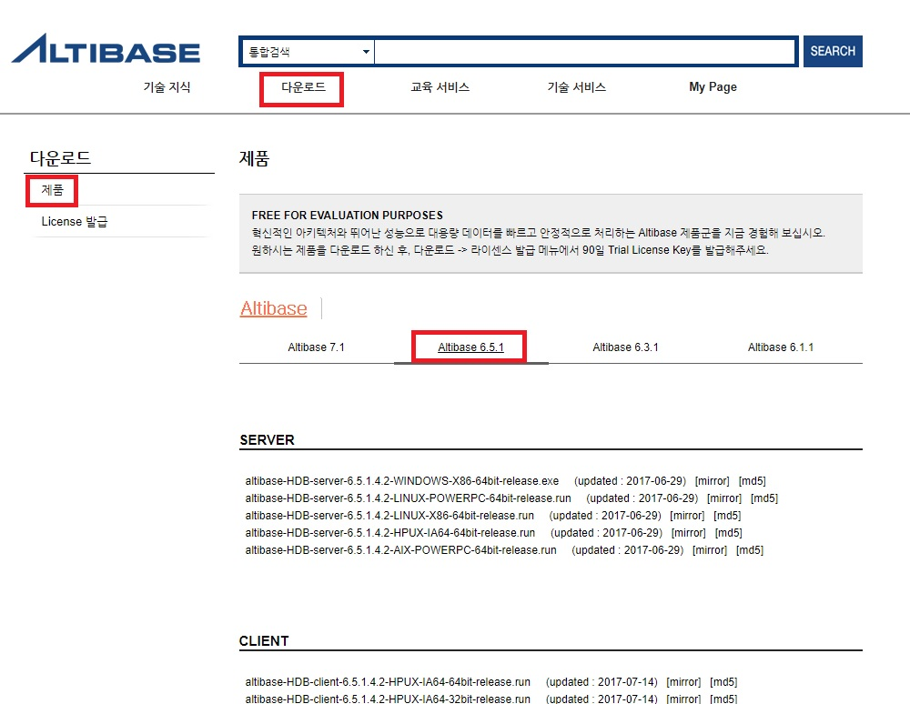
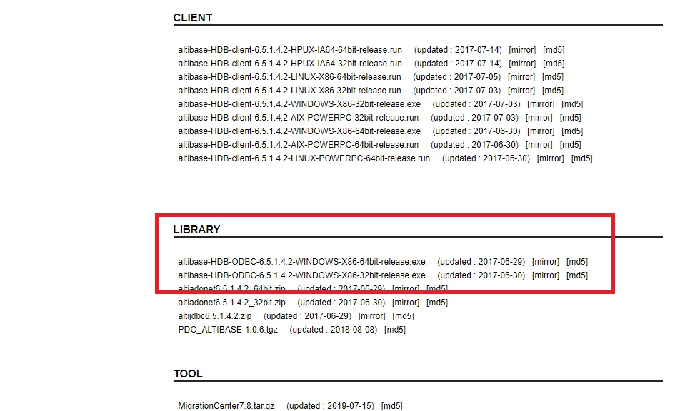
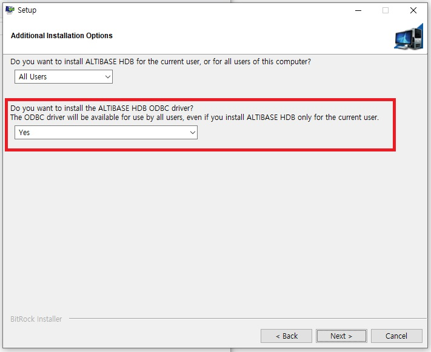
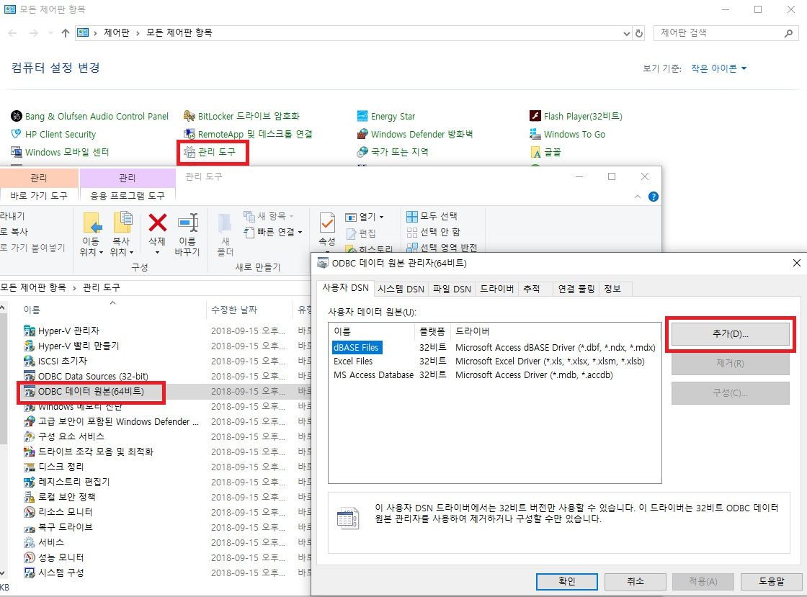
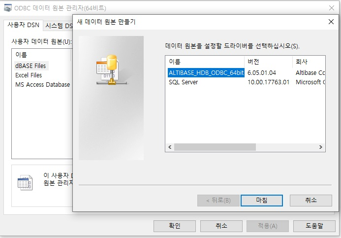
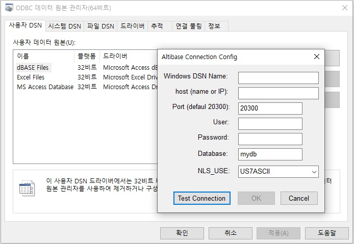
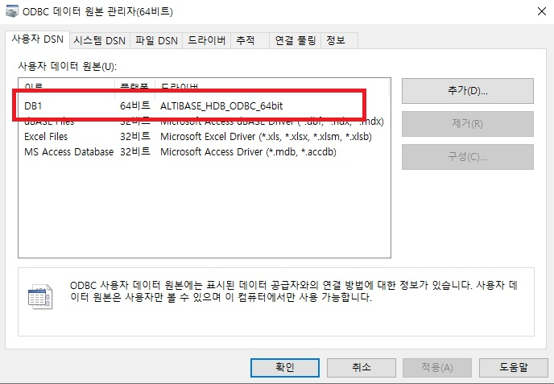

개요
본 문서는 Windows 환경의 Altibase 개발 환경에서 ODBC Driver를 이용한 각종 개발 툴의 설정 방법등을 가이드한다.
Altibase 버전은 6.5.1 을 기반으로 하며 문서를 위해 사용된 Windows의 버전은 10이다.
Altibase 6.5.1 버전까지만 Windows 용 ODBC 를 제공하며, Altibase 7 버전부터는 제공하지 않는다.
ODBC Driver 설정
개발하기 전에 Altibase ODBC환경의 개발을 위해서 Altibase가 제공하는 ODBC Driver를 설치해야 한다. http://support.altibase.com/kr/에서 다운로드 받을 수 있다.
ODBC 다운로드
http://support.altibase.com/kr 에 접속하여 “다운로드” → “제품” 부분으로 이동하면 각 버전별 Windows ODBC 파일을 내려 받을 수 있다. (Altibase 6.5.1 버전까지 지원)
웹 사이트에 없는 이전 버전인 경우 support@altibase.com으로 문의하도록 한다.


ODBC Driver 설치
처음 설치할 경우 WINDOWS CLIENT 패키지를 다운로드 받아 설치하도록 한다.
WINDOWS CLIENT 패키지 설치 시 복잡한 과정이 없으므로 본 문서에서는 별도로 설명하지 않는다.
(Altibase ODBC 마찬가지로 설치 시 복잡한 과정은 없다.)
WINDOWS CLIENT 설치 시 아래와 같이 ODBC 설치 화면이 나온다.

제어판의 ODBC 설정
Altibase ODBC Driver 등록을 위해서는 “시작” → “제어판" → "관리도구" → "ODBC 데이터 원본(64비트)" → "추가" 를 누른다.

"추가" 를 누른 후 ALTIBASE_HDB_ODBC_64bit 를 선택 후 "마침"을 누른다.

아래와 같은 DB 접속 설정 화면이 나오면 연결을 위한 설정 값을 입력한다.

| 항 목 | 설 명 | 예 |
|---|---|---|
| Windows DSN Name | 다른 DSN Name과 구별되는 고유한 명칭 | SERVER1 |
| Host (name or IP) | Altibase DB Server가 위치한 IP 정보 | 192.168.1.35 |
| Port (default 20300) | Altibase DB Server 연결 Port 정보 | 20300 |
| User | DB상의 계정 | sys |
| Password | DB계정의 비밀번호 | manager |
| DB Name | DB생성 시점에 만든 고유의 DB_NAME | mydb |
| NLS_USE | DB 캐릭터셋 | MS949 |
각 항목 입력 후 "Test Connection" 버튼을 클릭하면 ODBC Driver를 통해 Altibase DB Server로의 연결 확인이 가능하다.
(Altibase DB Server는 구동 상태여야 함.)
정상적으로 설정이 되었다면 아래와 같이 새로 추가된 ODBC 항목을 확인할 수 있다.

ODBC Driver 개발 가이드
ODBC Driver를 통해 Altibase DB Server에 접속할 경우는 별도의 소스 변환은 크게 필요하지 않으며 연결 부분에서 ODBC 연결문자열등의 변경이 필요하다.
WINDOWS에서 필요한 ODBC driver를 연동할 수 있는 헤더(ex. windows.h, sql.h, sqlext.h, afxdb.h)와 라이브러리(ex. odbc32.lib)들을 적절하게 사용하여 컴파일하면 된다.
ODBC 연결문자열
ODBC Driver를 이용한 프로그램에서는 다음과 같이 연결문자열을 사용한다.
빨간색으로 표기된 부분은 키워드로 사용되는 것이며, 파란색으로 표기된 부분은 연결할 Altibase DB Server의 접속정보와 ODBC 버전에 맞게 값을 변경하여 사용하면 된다.
| DRIVER=ALTIBASE_HDB_ODBC_64bit;user=sys;password=manager; Server=127.0.0.1;PORT=20300;NLS_USE=MS949;LongDataCompat=on | |
| Driver | ODBC 관리도구에서 확인한 Altibase Driver 이름 |
| User | DB상의 계정 |
| Password | DB계정의 비밀번호 |
| Server | Altibase DB Server가 위치한 IP 정보 |
| Port | Altibase DB Server 연결 Port 정보 |
| NLS_USE | DB 캐릭터셋 |
| LongDataCompat | ON / OFF (BLOB 등의 대용량 데이터를 사용할 경우 ON 으로 설정) |
Visual C++ 예제소스
Visual C++ 에서의 간단한 연결 예제는 아래와 같다.
#include <Afx.h>
#include <Afxdb.h>
#include "stdafx.h"
int _tmain(int argc, _TCHAR* argv[])
{
CDatabase db;
try
{
db.OpenEx(_T("ODBC연결문자열”), CDatabase::noOdbcDialog);
AfxMessageBox (_T("Connect OK"));
}catch (CDBException *e)
{
AfxMessageBox(e->m_strError);
}
return 0;
}
Visual C# 예제소스
Visual C++ 에서의 간단한 연결 예제는 아래와 같다.
using System;
using System.Collections.Generic;
using System.Linq;
using System.Text;
using System.Data.Odbc;
namespace ConsoleApplication1
{
class Program
{
static void Main(string[] args)
{
OdbcConnection cn = new OdbcConnection();
try
cn.ConnectionString = “ODBC연결문자열”;
cn.Open();
Console.WriteLine("connect ok");
}
catch (OdbcException ex)
{
Console.WriteLine(ex.Message);
}
Console.ReadLine();
}
}
}
Visual Basic 예제소스
Visual Basic 에서의 간단한 연결 예제는 아래와 같으며, 아래 예제에서는 DB에 접속하여 현재 날짜와 시간을 가져오는 소스로 구현되어 있다. (ADO 객체를 사용하여도 동일하다.)
Sub Main()
Dim cn As Odbc.OdbcConnection
Dim cmd As Odbc.OdbcCommand
Dim dr As Odbc.OdbcDataReader
cn = New Odbc.OdbcConnection
cmd = New Odbc.OdbcCommand
cn.ConnectionString = “ODBC 연결문자열”
Try
cn.Open()
Console.WriteLine("정상적으로 연결되었습니다")
cmd.Connection = cn
cmd.CommandText = "SELECT TO_CHAR(SYSDATE,'YYYY-MM-DD HH:MI:SS')FROM DUAL"
dr = cmd.ExecuteReader()
While (dr.Read())
Console.WriteLine(dr.GetString(0))
End While
Catch ex As Odbc.OdbcException
Console.WriteLine("연결에 오류가있습니다." + ex.Message)
End Try
Console.ReadLine()
End Sub
LOB 사용 시 주의사항
Altibase의 경우는 LOB 데이터타입을 사용할 경우, 반드시 접속 정보를 Non-AutoCommit으로 변경 후 사용이 가능하다.
그렇지 않을 경우 조회할 때 LOB 데이터타입에 대해 NULL을 가지고 오거나 insert / update 시점에 다음과 같은 에러를 발생하게 된다.
Connection is in autocommit mode. One can not operate on LOB datas with autocommit mode on.
다음 C# 소스예제를 통해 BLOB 데이터타입을 테이블에 insert / select 하는 과정을 확인할 수 있다.
BLOB insert 예제는 DB 접속이 된 상태에서 위에서 설명한 바와 같이 접속 정보를 Non-AutoCommit으로 변경하고 데이터를 insert 하는 예제이다.
사용된 “blob” 변수는 Byte[] 타입으로 선언하였다.
BLOB select 예제는 BLOB 데이터타입의 길이를 알아내기 위해 Altibase가 제공하는 BINARY_LENGTH라는 함수를 통해 Byte[]변수를 선언하고, 해당 변수에 데이터를 저장 후 파일로 생성하는 예제로 구성한 경우이다.
// BLOB INSERT
FileStream fs = new FileStream("c:\\test.dat", FileMode.Open, FileAccess.Read);
Byte[] blob = new byte[fs.Length];
fs.Read(blob, 0, System.Convert.ToInt32(fs.Length));
fs.Close();
OdbcTransaction tx = cn.BeginTransaction();
cmd.Transaction = tx;
cmd.CommandText = "INSERT INTO T1 (C1, C2) VALUES (?, ?)";
cmd.Parameters.Add("C1", OdbcType.Int);
cmd.Parameters.Add("C2", OdbcType.Binary);
cmd.Parameters[0].Value = 1;
cmd.Parameters[1].Value = blob;
cmd.ExecuteNonQuery();
tx.Commit();
// BLOB SELECT
cmd.CommandText = "SELECT binary_length(C2), C2 FROM T1";
tx = cn.BeginTransaction();
cmd.Transaction = tx;
OdbcDataReader dr = cmd.ExecuteReader();
int len;
while (dr.Read())
{
len = dr.GetInt32(0);
Byte[] ff = new Byte[len];
dr.GetBytes(1, 0, ff, 0, len);
fs = new FileStream("c:\\test.dat", FileMode.CreateNew, FileAccess.Write);
fs.Write(ff, 0, len);
fs.Close();
}
{kind=link}
{kind=link}
{kind=link}
{kind=link}
{kind=link}
{kind=link}
{kind=link}
{kind=link}